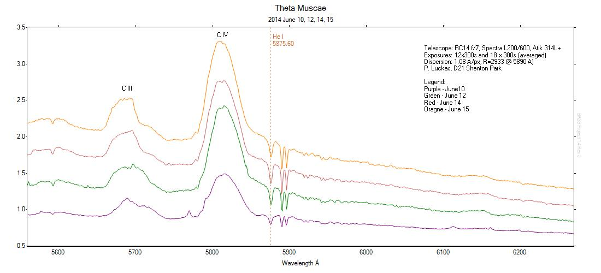
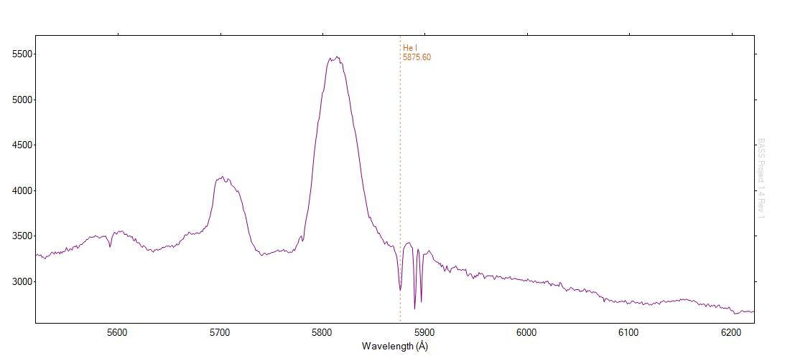
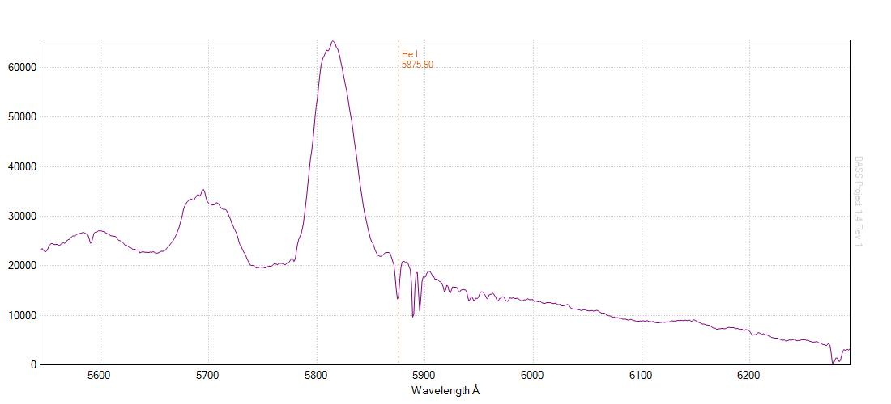
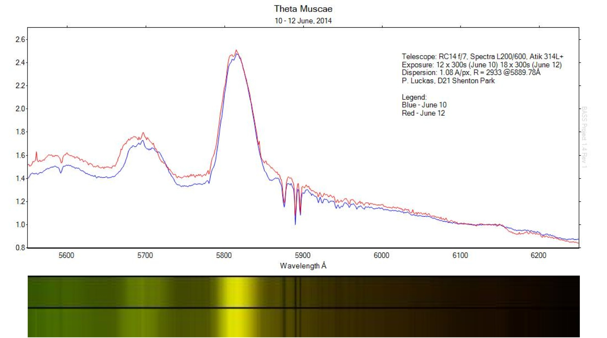
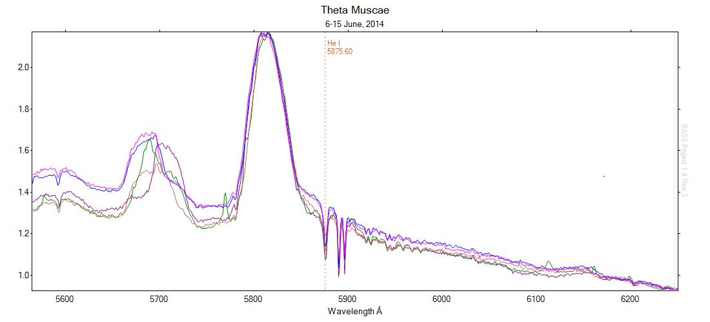
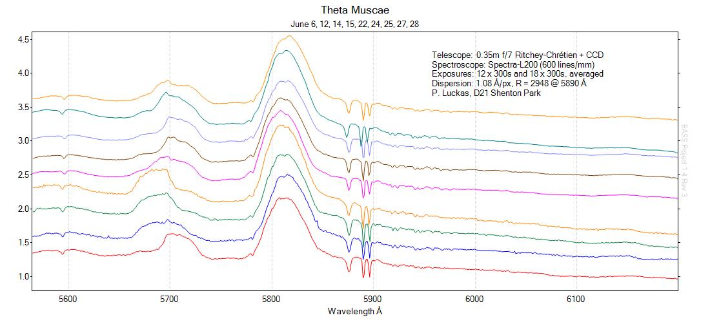

Spectroscopic observations of the magnitude 5.66 Wolf-Rayet star Theta Muscae reduced using BASS.

Image details:
- Star: HD 113904 (Theta Muscae)
- Telescope: 0.35m RC f/7
- Spectroscope: Spectra L200
- Grating: 600 l/mm
- Camera: Atik 314L+
- Date: 2014-06-06 13:23:07 UT
- Exposure: 300s x 12
- Dispersion: 1.08 A/pixel
- R = 2715 @5889.94Å

Profile (click to enlarge):

Additional references:
http://adsabs.harvard.edu/full/1977A%26A....54..607M
http://en.wikipedia.org/wiki/Theta_Muscae
Update:
An additional 12 x 300s images acquired on 140610, averaged using MaxIM DL and shown in the following profile:

First attempts at normalising profiles 10 - 12 June, 2014:



Use of vertical offsets clarity (click to enlarge):
Additional data acquired over the following weeks combined in the chart below. Note the periodic nature of the C III region (click to enlarge):
